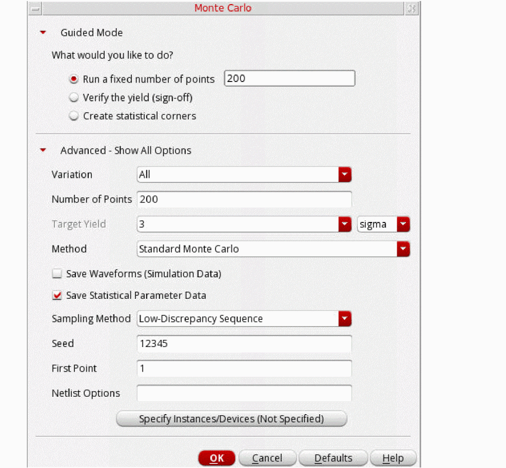
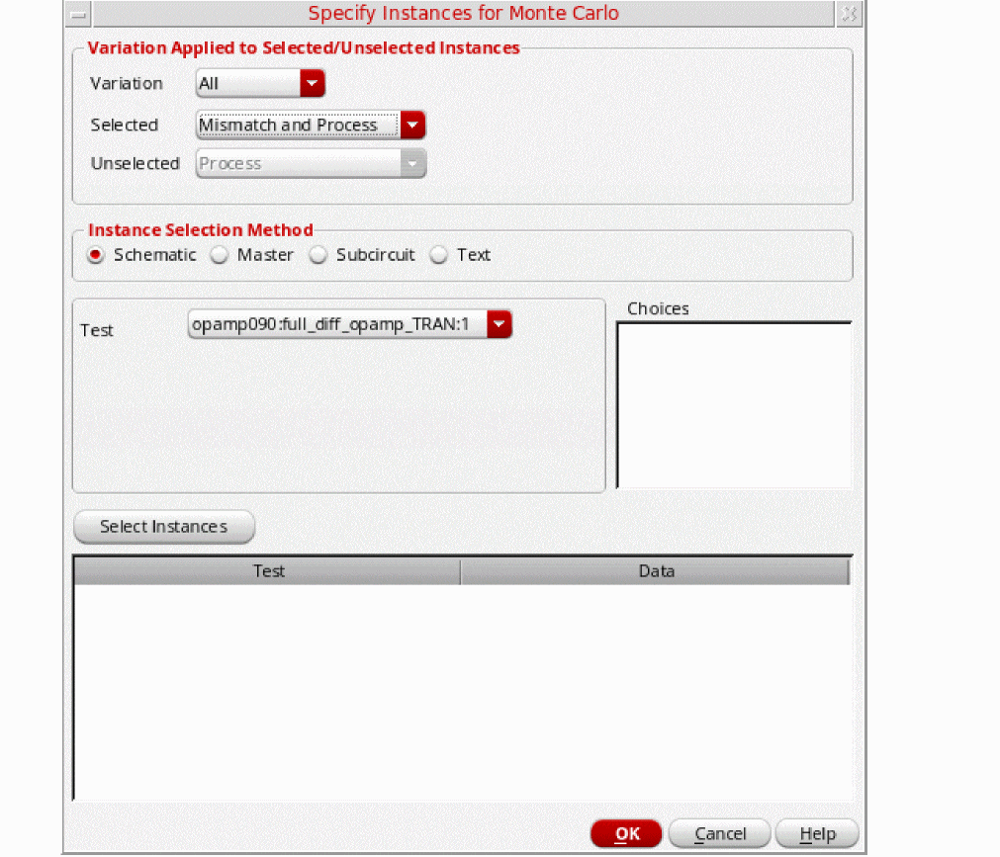
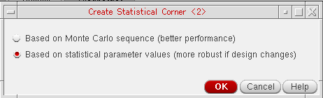
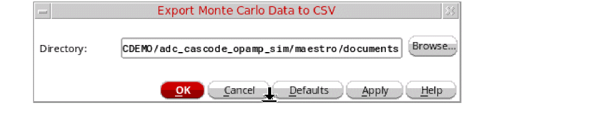

12
Monte Carlo Analysis
Monte Carlo analysis can be used to perform statistical analysis to estimate parametric yields and generate information about the performance characteristics of the circuits you design.
To perform statistical analysis for a single test, you can use ADE Explorer. For multiple tests or for multi-technology tests, you can use Monte Carlo in ADE Assembler.To used advanced run options or features, such as, high yield estimation, you require an additional license, Virtuoso Variation Option.
The following figure gives a snapshot of the licenses required to run various Monte Carlo methods and features.
The following topics in this chapter describe how to run Monte Carlo using ADE Assembler:
- Preparing Setup for Monte Carlo Analysis
- Running a Monte Carlo Simulation and Viewing Results
- Post-Processing Monte Carlo Results
- Advanced Monte Carlo Methods
Preparing Setup for Monte Carlo Analysis
The following sections provide details on how to set up Monte Carlo analysis:
- Preparing Setup in the Data View Assistant of ADE Assembler
- Setting Run Options in the Monte Carlo Form
Preparing Setup in the Data View Assistant of ADE Assembler
You can run Monte Carlo analysis over more than one test and corner. To selects the tests and corners that you want to use in analysis, do the following:
-
In the Data View assistant pane, identify the tests over which you want to run Monte Carlo and select the check boxes next to their names.
The Run Summary pane reflects the number of tests you have selected. -
Ensure that the simulator specified for the selected tests is Spectre, APS, or AMS Designer (with Spectre as the solver).
You can run Monte Carlo analysis only with these simulators. For details on simulators that support Monte Carlo, refer to Before Running a Monte Carlo Analysis in Virtuoso ADE Explorer User Guide. - Disabled output expressions—expressions for which the Plot check box is not selected in the Outputs Setup tab—will not be evaluated for Monte Carlo simulations. So ensure that the Plot check box is selected for the output expressions that you want to be evaluated.
- (Optional) Specify correlation constraints in Constraint Manager. The correlation constraints are evaluated during the Monte Carlo run. For more information, see Chapter 5, “Working with Constraints.”
-
(Optional) To use corners in the analysis, ensure that the # Corners check box on the Run Summary pane is selected. You can modify the corners you have defined in the Corners Setup form.
- (Optional) If you do not want to include the nominal corner in the Monte Carlo analysis, you can deselect the Nominal Corner check box on the Run Summary pane.
Setting Run Options in the Monte Carlo Form
Select the task that you want to perform and specify related options in the Monte Carlo run options form.
-
Choose Run – Monte Carlo Sampling to open the Monte Carlo form.
Alternatively, select Monte Carlo Sampling in the Select a Run Mode drop-down list on the Run toolbar, then click (Simulation Options) on the
(Simulation Options) on the
The Monte Carlo form appears, as shown below.
This form includes two sections:
– Guided Mode: Provides guidance in terms of the tasks you need to perform using Monte Carlo.
– Advanced – Show All Options: Provides a relevant set of options to be set based on the task selected in the Guided Mode section.
- Select an appropriate task that you want to perform.
-
Click the red arrow to the left of the to expand the Advanced – Show All Options section.
An example of the advanced options displayed for the default run mode, Run a fixed number of points, is shown below.

In this section, you can specify various options as listed below:
- The devices or device models for which you have specified statistically varying parameter values. You must specify either global (process) or mismatch (per-instance) variations or both.
- A method for statistical variation
- Number of points to run
- A sampling method to generate samples, seed value, and first point
-
Other Monte Carlo options
For details about the various options that can be set on this form for a standard Monte Carlo run, refer to Performing a Standard Monte Carlo Run section in the Virtuoso ADE Explorer User Guide.
By default, variation is applied to all subcircuit instances in the design. You can use the Specify Instances for Mismatch form to do one of the following:- Select specific instances to which variation must be applied. The variation is also applied to all subcircuits instantiated under the selected instances.
-
Select specific instances to which variations must not be applied. The variations is not applied to all subcircuits instantiated under the selected instances.
To open the Specify Instances for Mismatch form, click Specify Instances/Devices on the Monte Carlo form.If the button name appears as Specify Instances/Devices (Not Specified), it indicates that no instances or devices are selected. Therefore, mismatch variations are applied to all subcircuit instances in the design. If the button name appears as Specify Instances/Devices (Exists), it indicates that you have selected specific instances and devices to include or exclude for applying mismatch variations.The Specify Instances for Monte Carlo form appears as shown below.
For details on including or excluding instance and devices for applying mismatch variation, refer to Including or Excluding Instances and Devices for Applying Mismatch Variations in the Virtuoso ADE Explorer User Guide.
An additional point to note about this form in ADE Assembler is that ifAll Testsis selected in the Tests drop-down list, you can add only instances of cellviews that exist in the designs for all the tests. If instances of a cellview do not exist in the designs for all the tests, the View field displays the textNo Common Viewindicating that you cannot select instances of the cellview.By default, the Type and Sch/Master/Subcircuit columns are not visible in the table that lists the selected instances. To view these columns, right-click the title bar and select the name of the column to be displayed in this table.Also see:
Running a Monte Carlo Simulation and Viewing Results
To run a Monte Carlo simulation, click Run Simulation on the Run
toolbar.
ADE Assembler calculates the number of simulations to be run. If the number exceeds the threshold limit specified using the
Depending on the run options, ADE Assembler runs simulation for the identified samples. If the auto stop options are selected, the run is stopped automatically when the defined criteria is selected.
The following sections provide more details about running Monte Carlo simulations and viewing results:
- Running Incremental Monte Carlo Analyses
- Running Multi-Technology Simulations for Monte Carlo Analysis
- Viewing Results
- Viewing Statistical Parameters for Monte Carlo Samples
- Viewing Sensitivity Results
- Debugging in Debug Environment
Running Incremental Monte Carlo Analyses
You can use the Manual Tuning run mode in ADE Assembler to run Monte Carlo incrementally. In this run mode, you can append the results of multiple Monte Carlo runs to the same history and results view.
Important Points to Note
Consider the following points while running incremental Monte Carlo analyses in the Manual Tuning run mode:
- In order to run incrementally, all Monte Carlo runs must be performed within the Manual Tuning mode. You cannot append to a run performed outside of the Manual Tuning mode.
-
If the chosen sampling method is
Random, for every subsequent Monte Carlo run, specify an incremented value in the Starting Run Number field. For example, if you run the first Monte Carlo run for 20 points, in the subsequent run, set the Starting Run Number field on the Monte Carlo form to21. Similarly, the value in the Number of Points field can vary across different Monte Carlo runs. For example, if you run the first Monte Carlo run for 20 points, for the second one, you can set the Number of Points field to 40. -
If the chosen sampling method is
Latin Hypercube, specify a different seed value in the Monte Carlo Seed field or each subsequent Monte Carol run.
For more details on the Manual Tuning run mode, refer to Performing Manual Tuning.
Running Multi-Technology Simulations for Monte Carlo Analysis
You can run a Monte Carlo analysis in the multi-technology mode by enabling the Multi-Technology Mode option for a simulator and specifying the related Multi-Technology Simulation (MTS) options. For details on how to enable these settings, refer to Simulating Multi-Technology Designs and Defining Locally Scoped Models and Options.
After identifying the MTS blocks and specifying MTS options for them, run the Monte Carlo analysis. If you have specified different model libraries for the MTS blocks, the statistical and process parameters used for those blocks are different than the parameters used for the non-MTS blocks.
Viewing Results of Monte Carlo Analysis with MTS
After a multi-technology simulation is run, you can view the results on the Results tab. To view the process and statistical parameters used for simulation of a data point, change the results view to the Yield view, right-click a result data cell and choose Print Statistical Parameters.
The Results Display Window shows a list of all the process and statistical parameters along with the statistical value used for simulation. The names of parameters for the MTS blocks are prefixed with the name of their corresponding block. For example, in the following figure, the names of parameters for the inv MTS block are prefixed with inv.
Similarly, in the Sensitivity Analysis results window, the parameter names for MTS blocks are prefixed with the name of their corresponding block. For more details, refer to
Viewing Results
After the run is complete, ADE Assembler displays the results in the Yield view on the Results tab of the Outputs pane, as shown below.
Results are reported for each test, corner and measurement expression and the total yield is reported for the circuit. For details about this view, refer to Yield view in Chapter 18, “Viewing, Printing, and Plotting Results.”.
You can also use the Parameters: parameter-name=parameter-value, mc_iteration=n
where n is the number of the sample. For example, in the following figure of the Detail view, the results under the row Parameters: cload=100f, mc_iteration=1 displays the results for the first iteration.
To view the description of the each column in the Detail view of the Results tab, refer to Canceled. To know more about this status, refer to Starting a Simulation.
For more details on how to view and use the Monte Carlo results, refer to the following topics in Virtuoso ADE Explorer User Guide:
Viewing Statistical Parameters for Monte Carlo Samples
After running a Monte Carlo analysis, you can switch to the Detail view on the
To view and print the statistical parameters for a Monte Carlo sample, do the following:
-
In the Select the results view drop-down list on the Results tab of the Outputs pane, select Detail.
The Detail view is displayed. -
Right-click a result for a sample in the Nominal column and select Print Statistical Parameters.
The statistical parameters for that sample are displayed in a Results Display Window.
For information about printing the contents in the Results Display Window, see Printing Results from the Results Display Window.
Viewing Sensitivity Results
To view data on the sensitivity of variables and measurement expressions for a Monte Carlo run, do one the following:
-
Click the Sensitivity Results
 button on the Results tab.
button on the Results tab. -
On the History tab in the Data View pane, right-click the history item for a Sensitivity Analysis or Monte Carlo run and choose Sensitivity Results.
The Sensitivity Analysis form appears displaying the sensitivity results.
For more information about the Sensitivity Analysis form, refer to Sensitivity Analysis.
Debugging in Debug Environment
If any particular data point fails or shows undesired results, you can select the result in the Detail view and load it in the
Post-Processing Monte Carlo Results
The default results view for the Monte Carlo Sampling run mode is the Yield view. This view displays the overall yield estimate based on the pass or fail status of all the specifications. For details on the different columns in this view, refer to the Yield
Also refer to the following topics for the post-processing commands for Monte Carlo results:
- Managing Monte Carlo Results in the Yield View
- Generating Plots, Tables, and Reports
- Saving Monte Carlo Results in CSV Format
Managing Monte Carlo Results in the Yield View
The following topics explain how you can manage the Monte Carlo results either to show the most relevant data, or to create statistical corners that can be used in the next simulation runs:
- Viewing Data for a Specific Confidence Interval
- Creating Statistical Corners
- Filtering Out Data from the Yield View
Viewing Data for a Specific Confidence Interval
During or after a Monte Carlo analysis run, you can specify a confidence level to display the confidence intervals for the estimated yield, mean, and sigma.
To set the confidence level, right-click the gray-colored row at the top and choose Set Confidence Level. The Set Confidence Level form is displayed, as shown in the following figure.

Specify a percentage value in the One-sided Confidence Level field and click OK.
ADE Assembler displays the confidence intervals for the yield, mean, and sigma values, as shown in the following figure.
Creating Statistical Corners
After running Monte Carlo simulations, you can analyze the yield and identify the specifications for which the results need improvement. You can then create statistical corners to be used in further analysis and design optimization.
You can create statistical corners by using any of the following methods:
For the first method, you can use the Create Statistical Corner command in the right-click context-sensitive menu of the Detail or Detail – Transpose results views. The commands for these methods are available in the context-sensitive menu for the specification results in the Yield results view, as shown below.
For more details on these ways, refer to the topics given below.
Creating a Statistical Corner with Statistical Parameter Values
You can create statistical corners in two ways, interactively or automatically.
Creating Statistical Corners Interactively
Use the interactive way to create statistical corners from any sample of an existing Monte Carlo run. For this, open the Detail or Detail - Transpose results view, right-click a point and choose Create Statistical Corner from the context-menu.
-
If you had saved statistical data by selecting the Save Statistical Parameter Data check box in the Monte Carlo options form, the following dialog box prompts you to choose a method to create a corner:
By default, the Based on statistical parameter values option is selected. Use this option if you expect to make changes in the design. -
If you did not save statistical data by selecting the Save Statistical Parameter Data check box in the Monte Carlo options form, values-based corner cannot be created. In this case, a sequence-based statistical corner is created without any additional prompt to select a method to create a corner.
The sequence-based corner is named asStat_Seq_<seq_ID>, where<seq_ID>is the sequence ID of that sample. Whenever you re-simulate the design, Spectre re-creates the statistical corner based on the sequence ID.
You can also create a statistical corner for a particular point in the histogram for a specification. For this,
Creating Statistical Corners Automatically
When the Create Statistical Corners check box is selected in the Monte Carlo options form, corners are automatically created at run time based on the selected Virtuoso Variation Option (VVO) method. In this case, values-based corners are created by default. You can change the default behavior by setting the "auto".
Important Points to Note
- Statistical corners created by using the statistical parameter values are more robust and do not need to be recreated if there are minor design changes. However, in this case, you need to save the statistical parameters while running the Monte Carlo simulations. Statistical corner saved using the sequence ID are not robust because if you make slight changes in the design, such as addition of a new device instance, Spectre can no longer re-create the same statistical parameter values that were created for the original Monte Carlo run using the sequence ID.
-
You can change the default way of statistical corner creation by changing the value of the the createStatisticalCornerType environment variable. The default value is
"auto", which prompts you to choose the corner type when creating corners interactively (if statistical data is saved). Set this variable to"sequence"to always create a statistical corner by using a sequence ID of a sample. Set it to"values"to always create a statistical corner by using the statistical parameter values of a sample.
Creating a Statistical Corner from a Worst Sample
In this method, ADE Assembler helps in identifying a sample that generated the worst result for a specification and creates a statistical corner using the sample details.
To create a statistical corner from the worst sample, do the following:
- Open the Monte Carlo results in the Yield view and identify the specification for which you need to improve the yield.
- Right-click the row for that specification and choose Create Statistical Corner from Worst Sample.
ADE Assembler looks into the simulation results to find a sample that gives the worst result for that specification and creates a statistical corner using that sample. The new corner is added it to the Corners list in the Data View assistant pane. The corner is named as Stat_Seq_<seq_ID>_<spec_name>, where <seq_ID> is the sequence ID of that sample and <spec_name> is the name of the specification. For example, if you choose to create a corner for the worst sample for UGF, ADE Assembler creates a corner with the name Stat_seq_40_UGF, where the sequence ID of the sample is 40.
Note the details of the statistical corner in the following figure.
The figure given above shows that ADE Assembler saves the sequence ID, seed, and other Monte Carlo settings to the statistical corner when simulating it. Using this information, the simulator can recreate the statistical parameter values for the corner. This type of corner is efficient and does not require saving all the statistical parameter data for each sample in Monte Carlo. However, one disadvantage is that some changes to the design topology, such as, addition of a new instance to the schematic, can invalidate the corner. In that case, the simulator cannot recreate the same set of statistical parameter values when simulating the statistical corner. You would then need to rerun the Monte Carlo simulation to recreate statistical corners.
To avoid this, you can create statistical corners by directly saving the parameter values from the sample in the corner details and by not referring to any sequence ID. For more details, refer to Creating a Statistical Corner with Statistical Parameter Values.
Creating a Statistical Corner from Percentile
In this method, you can create a corner for the nth worst percentile for a given specification. That is, a statistical corner is created from the Monte Carlo sample that gives the nth worst output for a specification.
To create a statistical corner from percentile, right-click the output of a specification in the Yield view and choose Create Statistical Corner from Percentile. The Create Statistical Corner form is displayed, as shown in the following figure.
Specify a percentile value for which you want to create a sample and click OK.
ADE Assembler creates a new statistical corner and adds it to the Corners node in the Data View assistant pane, as shown in the following figure.
The default name of a new statistical corner consists of a prefix Stat_seq followed by the sequence ID of the sample and the specification name. The tooltip for a corner displays the values for all corner conditions, names of the base specification and base corner, and the percentile value used to create that corner, as shown in the following figure.
< or >, only one statistical corner is created from the percentile. A < specification type represents a corner larger than the average value. A > specification type represents a corner smaller than the average value. If the specification type is range or if a specification is not defined, two corners are created–one in each direction.By default, the corner uses the sequence ID of the sample that gives the nth worst output for a specification. Using this information, the simulator can then recreate the statistical parameter values for the corner when simulating it. This type of corner is efficient and does not require saving all the statistical parameter data for each sample in Monte Carlo. However, one disadvantage is that some changes to the design topology, such as, addition of a new instance to the schematic, can invalidate the corner. In that case, the simulator cannot recreate the same set of statistical parameter values when simulating the statistical corner. You would then need to rerun the Monte Carlo simulation to recreate statistical corners.
To avoid this, you can create statistical corners by directly saving the parameter values from the sample in the corner details and by not referring to any sequence ID. For more details, refer to Creating a Statistical Corner with Statistical Parameter Values.
Creating Statistical Corners by Using Target Yield Value (Specified in Sigma)
This is a fast method to create 3-sigma or user-specified sigma statistical corners without requiring a large number of Monte Carlo samples.
Virtuoso Variation Option license. For more details, refer to Creating a K-Sigma Statistical Corner in Virtuoso Variation Aware User Guide.Displaying Statistical Parameters of Statistical Corners
After you create the statistical corners, you can view them in the Corners section of the Setup assistant. You can also view them in the Corner Setup form, as shown in the figure below:

The Design Variables row displays the statistical parameters count in the x stat vars format, where x indicates the number of statistical parameters. To view the complete list of these parameters, double-click in the Design Variables cell for a statistical corner. An editor window appears that displays the complete list of statistical parameters, as shown in the figure above.
Filtering Out Data from the Yield View
By default, the statistical calculations displayed in the Yield view are based on all the points in Monte Carlo results. However, you can filter out and eliminate the points that were either partially complete or they resulted in simulation or evaluation errors so that the yield estimate is calculated only on the points for which simulation was successfully completed.
To apply a filter in the Yield view, right-click the gray-colored row at the top and choose Filter Points from Yield Estimate.
Generating Plots, Tables, and Reports
ADE Assembler provides the following post-processing commands that you can use to print and plot the results data in different ways that suit your data analysis requirements:
You can find these commands in any of the following ways:
- Click on the Results tab, select a test and choose the required command.
- Open the Yield results view, right-click a test name, and choose the required command.
For details on these commands, refer to
Saving Monte Carlo Results in CSV Format
After a Monte Carlo run is complete, you can save the results in CSV format. ADE Assembler saves the results for each corner in a separate.csv file. For this, do the following:
-
In the History tab on the Data View pane, right-click a Monte Carlo run history and choose Export Data to CSV.
The Export Monte Carlo Data to CSV form is displayed.
The Directory field shows the default directory, <path-to-the-maestro-view-dir>/documents, where the.csvfiles are saved. If required, you can change this path and click OK.
ADE Assembler exports the output data for each corner in a separate.csvfile and saves it in the specified directory. The names of these.csvfiles are also listed in the Documents list in the Data View assistant.
To open a
.csvfile fro the ADE Assembler window, right-click a file in the Data View assistant and choose Open. The file is opened in the default text editor.
To export CSV from a SKILL script, see axlWriteMonteCarloResultsCSV.
Advanced Monte Carlo Methods
When you have the have the Virtuoso Variation Option (VVO) license, you can use the following advanced methods that are available on the Monte Carlo run options form:
- Yield verification using sample reordering - to verify the yield without simulating such a large number of samples
- Scaled-sigma sampling method - for estimation of a high yield (> 3 sigma) by generating samples where the standard deviation has been scaled up.
- Worst case distance method - for estimation of a high yield (> 3 sigma) by finding the shortest distance, also called the Worst Case Distance or WCD, from the nominal point to the specification boundary in the process/mismatch parameter space.
- K-sigma corners method - for fast creation of statistical corners when the number of statistical parameters is large (> 1000)
- Worst samples method - for an accurate set of statistical corners
- Sensitivity Accuracy method for mismatch variation - to identify the devices that are important contributors to mismatch variation and to make the design less sensitive to mismatch variation.
For more information about these methods, refer to the
Return to top